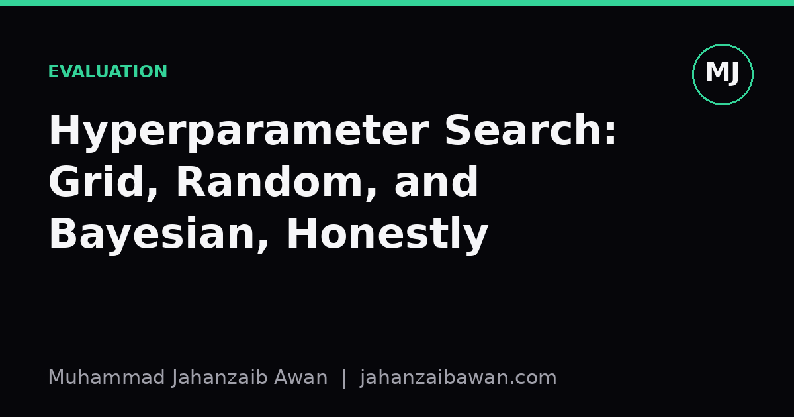

Hyperparameter Search: Grid, Random, and Bayesian, Honestly
A practical comparison of the three main tuning strategies, including when each one is worth the extra engineering effort and when it is not.

Why the search strategy quietly matters
Most tutorials treat hyperparameter tuning as an afterthought: pick a few values, run a loop, take the best score. But the search strategy you choose determines how much of the true performance surface you actually see, and how much of your reported improvement is signal versus noise from an unlucky or lucky search. I have come to think of tuning as a small experiment in its own right, one that deserves the same scepticism I apply to the model itself.
The three strategies people reach for are grid search, random search, and Bayesian optimisation. Each has a genuine niche. The honest answer to which one is best is that it depends on the number of hyperparameters, how expensive each training run is, and how much you already know about the shape of the loss surface. Treating one of them as universally superior is where most of the folklore around this topic goes wrong.
Grid search: comfortable but wasteful in high dimensions
Grid search evaluates every combination of a fixed set of values for each hyperparameter. With two hyperparameters and five values each, that is twenty five runs. It is easy to reason about and easy to parallelise, which is why it remains popular for small problems. The trouble starts when you add a third or fourth hyperparameter: five values across four parameters is six hundred and twenty five runs, and the cost grows exponentially with dimensionality.
The deeper problem is not just cost, it is wasted effort. Suppose learning rate matters a great deal to your model's performance but batch size barely matters at all within the range you tested. Grid search still spends equal resources on both, because it treats every axis as equally important by construction. You end up with many runs that only differ in the dimension that does not matter, which tells you almost nothing new.
Grid search also forces you to commit to specific candidate values in advance, and if the true optimum sits between two grid points, you simply never find it. Making the grid finer helps but multiplies the cost again. It is a reasonable default when you have one or two hyperparameters and cheap training runs, and a poor choice once you have four or more parameters or training takes hours rather than seconds.

Random search: the underrated workhorse
Random search samples hyperparameter values from specified distributions rather than a fixed grid. This sounds like a downgrade until you think about what happens when only a subset of hyperparameters truly matters, which is the normal situation in practice. Imagine again that learning rate matters a lot and batch size barely matters. With a budget of twenty five runs, grid search on a five by five grid tests only five distinct learning rate values. Random search with the same budget tests roughly twenty five distinct learning rate values, because each draw is independent across dimensions. You get far denser coverage of the dimension that actually drives performance, for the same computational cost.
This is not a minor technicality, it is the main reason random search tends to outperform grid search at equal budget once you have more than two or three hyperparameters. It also degrades gracefully: if you can afford more runs, you simply add more samples, no need to redesign a grid. And it is trivially parallel, since each run is independent and does not depend on the outcome of any other run.
The honest limitation is that random search is still blind. It does not learn anything from earlier runs; a configuration that scored poorly gives you no information that changes where you sample next. When training is very expensive, cheap in run count but expensive in wall clock time, that blindness starts to cost real money and real time.
Bayesian optimisation: earns its complexity only sometimes
Bayesian optimisation builds a probabilistic surrogate model, often a Gaussian process, of how validation performance depends on hyperparameters, and uses that model to choose the next configuration to try, balancing exploration of uncertain regions against exploitation of promising ones. In principle this should beat random search because it uses information from every previous run. In practice the benefit shows up clearly only under specific conditions: relatively few hyperparameters, usually under about ten to fifteen, and training runs that are expensive enough that the overhead of fitting the surrogate model is negligible by comparison.
Consider a case where a single training run takes several hours on a large model. Here every wasted run is costly, so spending a few seconds fitting a Gaussian process to decide the next candidate is clearly worth it, and Bayesian methods often find a good configuration in noticeably fewer runs than random search. Now consider the opposite case: a small model that trains in under a second, where you can afford tens of thousands of random samples. The overhead of the surrogate model and its sequential, harder-to-parallelise nature can make Bayesian optimisation slower in wall clock terms than simply throwing compute at random search, even though it uses fewer total evaluations.
There is also a subtlety around dimensionality that gets glossed over. Gaussian process surrogates tend to lose their advantage as the number of hyperparameters grows, because the space becomes too sparse for the model to fit well with a realistic number of observations. Some practitioners fall back to tree-based surrogates or simply accept diminishing returns once they are tuning fifteen or twenty parameters simultaneously, at which point random search with a generous budget is often just as good and considerably simpler to implement and debug.
Sequential dependence is the other honest cost. Bayesian optimisation typically chooses one point, waits for the result, then chooses the next, which limits parallelism unless you use batch variants, and those add their own complexity. If your infrastructure can run fifty models in parallel, a fully sequential Bayesian search may finish later in wall clock time than a random search that fires off fifty runs at once, even if it needs fewer total evaluations to reach the same score.
A practical way to choose
My rule of thumb is this: use grid search only when you have one or two hyperparameters and training is cheap enough that exhaustiveness is affordable. Default to random search for most problems, since it is simple, parallel, and handles the common case where only a few dimensions truly matter. Reach for Bayesian optimisation specifically when individual training runs are expensive, the hyperparameter count is modest, and you have the infrastructure to tolerate its more sequential nature.
Whichever strategy you choose, keep the validation split leakage-free and fixed across all candidate configurations, and report the search budget alongside the result. A model that looks better after a thousand random search trials is not necessarily better, it may just be the winner of a larger lottery. Reporting the strategy honestly is as important as choosing it well.